Selected Environment variables
Type of shell in-use
In UNIX there are two major types of shells: The Bourne shell and C shell. We can find the type of shell in-use in a terminal in the environment variableSHELL.
$ echo $SHELL
In our course VM, the output is/bin/bash, which is the path to the shell executable.
A path can be absolute, i.e., starting from the root of the file system (e.g./home/csci3150), or relative, i.e., starting from the current directory (.) (we can list the current directory withls ./and the parent directory withls ../).
Home directory and working directory
Every time the terminal is opened, we land on the home directory, which is stored in the variableHOME.
$ echo $HOME
When you navigate among folders, the absolute path to the current working directory is always stored inPWD.
Path to search for executables
When you execute a command from the terminal, e.g.ls, the shell first looks into the directories stored inPATHsequentially for the first executable namedls. It then runs the executable. The value ofPATHcan be shown by executing,
$ echo $PATH
and in the course VM, you get the following sequence of folders
/home/csci3150/bin:/home/csci3150/.local/bin:/usr/local/sbin:/usr/local/bin:/usr/sbin:/usr/bin:/sbin:/bin:/usr/games:/usr/local/games:/snap/bin
with each of them separated by a colon:. Users can run executables under these directories without specifying the path to these executables.
On the other hand, users need to specify the complete path to executables that are outside these directories, e.g. to run an executable namedhello_worldunder the current directory by executing./hello_world.
We can use the following command to add a directory to the$PATH.
$ export PATH="/path/to/dir:$PATH"
This change is temporary. If you want to make the changes permanent, you can edit.bashrcin your home directory and add the above command. In practice, however, we only include a few trusted directories for better security, e.g. to avoid spoofing programs (see the explanation from IBM).
There are other common environment variables in Linux and users can also define their own variables usingexport(see more details here).
Selected Bash Commands
Repeater,echo
echosimply repeats the input. Here is an example,
$ echo "hello world"
Task manager,top/htop
topis a built-in command line task manager which shows processes and resources utilization.
$ top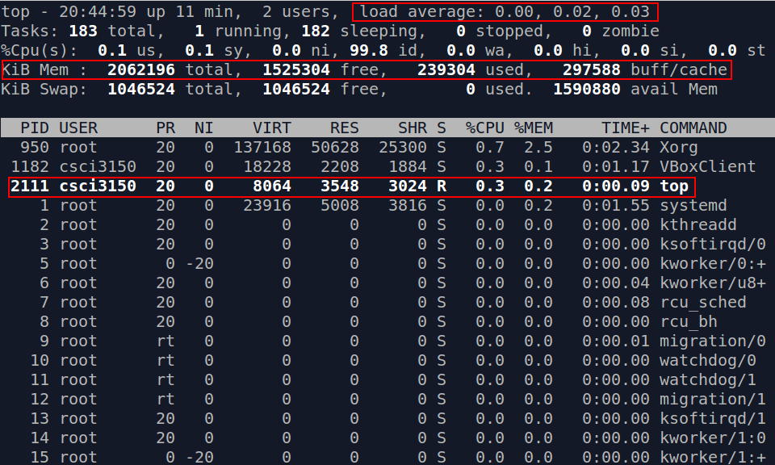The first line shows the average system load in the last 1 minute, 5 minutes, and 15 minutes; the forth line reflects the utilization of physical memory.
Below the fifth line, there is a table of processes with resources utilization shown. We take the third process as an example and name the information shown in the columns from left to right,
- Process ID (PID) : 2111
- Run by the user :
csci3150 - Scheduling priority (PR) : 20
- Nice value (NI) : 0.
- Virtual memory (VIRT) allocated: 8064KB
- Physical memory (RES) allocated: 3548KB
- Shared memory (SHR) allocated: 3024KB
- Status (S) : "R", running
- CPU usage (%CPU) : 0.3
- Memory usage (%MEM) : 0.2
- CPU time (TIME+) : 0.09 seconds
- Command line used to start the process (COMMAND):
top
You may also refer to the manual page of top for details on the information shown.
To close the task manager, simply pressq.
Besidestop, you may install and use a more colorful task manager,htop.
To installhtop,
$ sudo apt-get -y install htop
(The-yoption means automatically answer "Yes" for question asked)
Try callinghtopin a terminal,
$ htop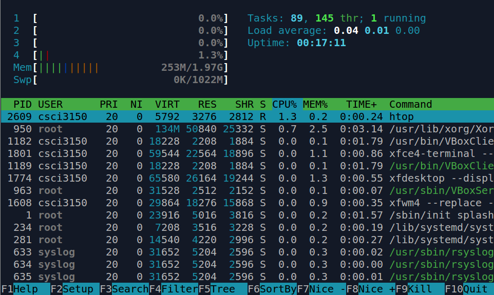Same as top, it can be close by pressing q.
Basic operations on files
Determine file type,file
filetries to identify the type of files using three different methods (see its manual page for details). For example, to determine the file type of/bin/bash, execute
$ file /bin/bash
andfilereports/bin/bashis an 32-bit executable.
Showing file content,cat/more/less/head/tail
cat,more,less,head, andtailare commonly used commands for showing file content in a terminal, i.e., printing files' content to the terminal.
catconcatenates files and prints all content to the terminal at once. For example, to print the content of a file namedhello.txt,
$ cat hello.txt

moreandlessare two other commands that do a similar job ascatonce,moreandlessdivide and print one screen at a time.
headprints a certain numbers of lines, 10 by default, from the beginning of a file. The number of printed lines can be controlled via the option-n, e.g. to print only the first 2 lines ofhello.txt,
$ head -n 2 hello.txt
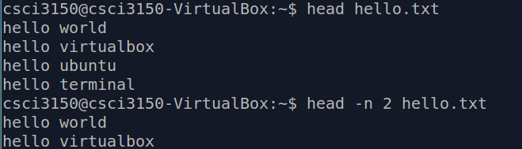
tailis almost the same ashead, except that it counts lines from the end of a file.
You may refer to the online post here for more details and examples on these commands.
Searching file content,grep
grepsearches files and prints the lines in which keywords are found, with keywords highlighted.
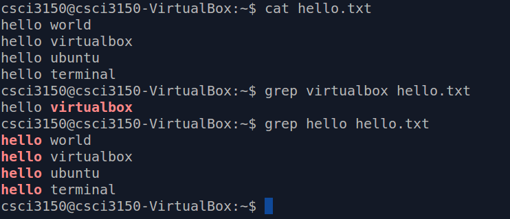
To search a phrase with one or more words, embrace the phrase with double quotes ("").
grepsupports searching many files at the same time, e.g.grep hello hello1.txt hello2.txt hello3.txt.
Besides,grepsupports regular expressions (regex) besides keywords in plaintext, and you may refer to this guide for more details on the use of regex forgrep. Beware that the syntax for regex may differ among commands, i.e., the one works forgrepmay or may not work for other commands.
Another intersting thing is that we can usegrep -vto search the lines that do not have the keywords. See the following example.
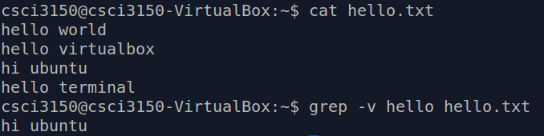
Useful Operators for Bash Commands
Below are some useful operators in Bash with simple examples of their usage.
Ampersand Operator (&)
Adding&at the end of a command allows you to start a process in background, e.g. to start and run a task manager in background,
$ htop &

The command returns the number of processes currently in background inside the square barracks ([]), followed by the id of the last process put into background.
To bring the last "background-ed" process foreground, execute
$ fg
NOT Operator (!)
The NOT operator!allows you specify exceptions when running a command. Let try to understand it via an example.
First, create a foldertest
$ mkdir test
Then, we move into the foldertestand create some files under this folder
$ cd test
$ touch a b a.txt b.txt
By default,$ lsshows the four files we created under the foldertest. To show files except those ended with the extension.txt, we may use
$ ls !(*.txt)
Note that*represents any number of characters, and is known as one of the wild characters(see the documentation for more details).
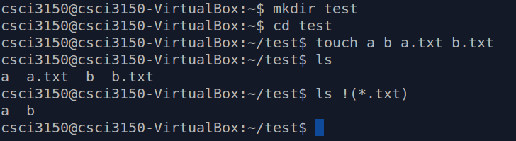
Pipe Operator (|)
By putting|between 2 commands, the output of the first command is piped to the second command as its input, e.g. to show the name of files with keywordDafter listing the current directory,
$ ls -1 | grep "D"
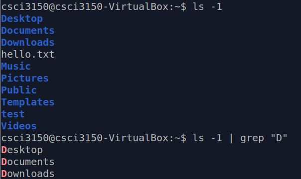
To search several words in a line, we can use the pipe operator andgrep:grep first_pattern file_name | grep second_pattern.
pipe ensures that data
- flows in one-way and,
- is output in the order of input, i.e. first-in-first-out
(see more details on pipe here).
Output Redirect Operator (>)
Adding a>to the end of a command, followed by a file name, redirects the standard output stream (stdout)(What are standard streams?) to a file, i.e. the output is written to the file instead of the terminal , e.g.
$ ls >ls.out
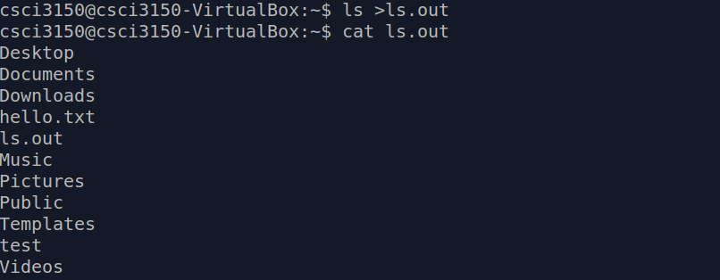
The output oflswritten to the filels.outinstead of the terminal. You may recap the output by executing$ cat ls.out.
However, errors are usually output to the standard error stream (stderr) instead ofstdout. To redirectstderr, we should specify its file descriptor, which is2, explicitly before>, e.g.
$ haha 2>haha.err
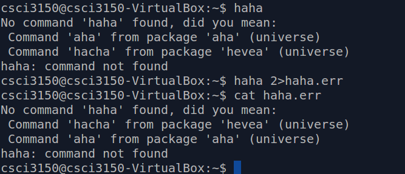
The error message is then written to the filehaha.err, instead of the terminal.
Semi-colon Operator (;)
To run multiple commands in series, you may chain up the commands with semi-colons (;). The;operator marks the end of each command in a series of commands. For example, to create a filemyfile, copy it asmyfile_copy, create a folderfile_copy, and move the copied file into the folder,
$ touch myfile; cp myfile myfile_copy; mkdir file_copy; mv myfile_copy file_copy/
Note that the command is in one single line (although it may overflow in the html display).
AND Operator (&&)
If we replace;with&&between two commands, the second command only runs if the first command succeeds, i.e., the first command exits with status 0 (more on exit status of Bash commands). For example,
(1)$ ls && echo ">> Success <<"
vs.
(2)$ haha && echo ">> Success <<"
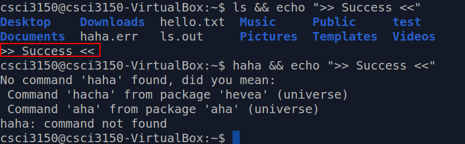
Sincelsis a valid command buthahais not,echo ">> Success <<"runs in (1), but not (2).
OR Operator (||)
Opposite to&&, if||is used between two commands, the second command only runs if the first command fails, i.e., the first command exits with a non-zero status. For example,
(1)$ haha || echo ">> Failed <<"
vs.
(2)$ ls || echo ">> Failed <<"
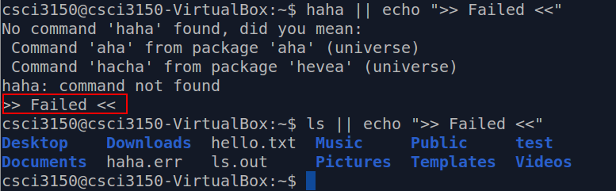
Sincehahais an invalid command butlsis a valid one,echo ">> Failed <<"runs in (1), but not (2).
Conditional Command Execution using AND Operator (&&) and OR Operator (||) together
&&and||complement each other. We may achieve similar (but not always the same) outcome as if usingif ... then ... else .... For example,
(1)$ haha && echo ">> Success <<" || echo ">> Failed <<" Since
Sincehahais an invalid command,echo ">> Success <<"is skipped, butecho ">> Failed <<"runs.
On the other hand, for
(2)$ ls && echo ">> Success <<" || echo ">> Failed <<"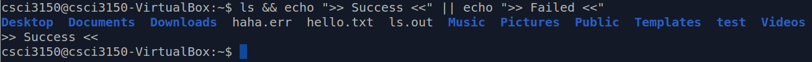sincelsruns successfully,echo ">> Success <<"runs.Then, sinceecho ">> Success <<"also runs successfully,echo ">> Failed <<"is skipped.
By reordering (1) a bit,
(3)$ haha || echo ">> Failed <<" && echo ">> Success <<"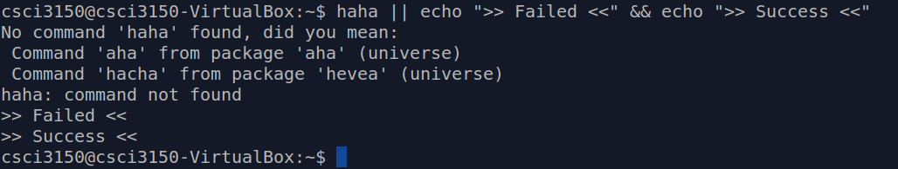we see that both&&and||have the same precedence and are evaluated from left to right (see the guide here). Hence,echo">> Failed <<"runs becausehahafails, andecho ">> Success <<"runs becauseecho ">> Failed <<"succeeds.
Command Combination Operator ({})
By putting multiple commands within a{}, the commands are run (or not run) as a whole. For example, to print both ">> Success <<" and "XD" if the first command succeeds, and ">> Failed <<" otherwise, we should group the first twoechos with{},
$ haha && { echo ">> Success <<"; echo "XD"; } || echo ">> Failed <<"
Without{},
$ haha && echo ">> Success <<"; echo "XD" || echo ">> Failed <<"
$ haha && echo ">> Success <<" is treated as the first sequence of commands, while echo "XD" || echo ">> Failed <<" is another. Therefore, echo ">> Success <<" is skipped when haha fails, butecho "XD" runs.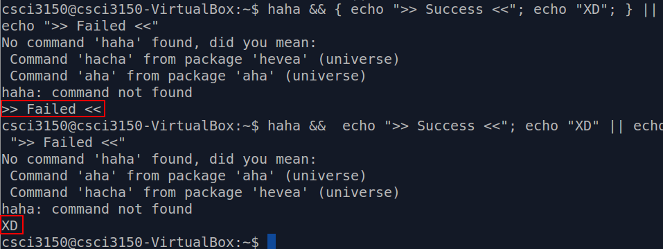
Reference
- However, some of the examples do not work as expected...
Extra
Bash Commands
- More than searching file content:
sedandawk